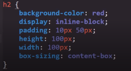

A continuación se espesifican las diversas propiedades que alteran el comporatamiento o aparencia de las cajas HTML
Background-color
-
Define el color de fondo de un elemento, Esta propiedad acepta multiples formatos de color colo lo son:
- Palabras clave
- Colores del sistema
- RGB hexadecimal
- RGB numérico
- RGB porcentual
Ejmeplo

Padding
-
El padding consiste en la distancia entre la caja y el conteido de esta, se divide en las cuatro caras del elemento:
Padding left: distancia borde izquierdo con el contenido
Padding top: distancia borde superior con el contenido
Padding right: distancia borde derecho con el contenido
Padding botton: distancia borde Inferior con el contenido

Padding se trata de una propiedad con multiples formas de definirla en CSS
-
Se puede asignar un valor a cada cara del elemento por separado:

-
Tambien es posible generalizar y aplicar un unico valor para todas las caras del elemento:
-
Otra opción es la de definir un valor para el eje Y y otro para el eje X de la sigute forma:

Nota: en el caso de padding el primer valor define el eje Y y el segundo corresponde al eje X
-
La ultima alternativa al declarar el padding consiste en declarar un valor diferente para cada cara del elemento en el mismo uso de la propiedad, de la siguite forma:
El orden al signar el valor de las caras consiste en que el primer valor se asigna al top y posterior mente se coninua con las siguites cara en el sentido de las agujas del relog.
Nota: si se da el caso de que no se asigna alguna de las caras com en esta imagen:
Si no es definido el valor de alguna de las dos caras del eje en cuestión el navegador lo resuleve aplicando el valor de la cara que si se decreto a todo el eje.
Height y Width
-
Estas propiedades definen las dimenciones en alto (height) y ancho (width) del elemento en cuestión.
Tener en Cuenta
Un aspecto que es util recordar es que cierta propiedad puede modificar el conportamiento de height y de width, esta se trata de box-sizing la cual define el que se tiene en cuenta para
Box-sozing
-
Esta propiedad defiene el que aspectos del elemento se tomaran en cuenta para definir las dimenciones del elemento, es decir define el comportamiento de algunas propiedades para que estas puedan o no modificar las dimenciones definidas por height y width. Para esto cuenta con dos valores con esta función:
-
Content-box
Este valor define que a las dimenciones establecidas del elemento se ajusten acorde al contenido de este, es decir el espacio que ocupa el contenido se sumara al valor definido en height y width

Por lo tanto en este ejemplo las dimenciones de este elemento seran las definidas por height y width más las dimenciones de contenido y el padding resultando en un elemento que realmente excede los 100 X 100 definidos por height y width.
-
Border-box
Este valor define que el contenido no se tomra en cuanta para definir las dimenciones de la caja por lo tanto sin importar el que las dimenciones totales del elemento seran las que establescan height y width.
De esta forma

-
Margin
-
Se trata de la distancia de separación entre la caja y los demas elementos, su funcionamiento es identico al de padding por lo tanto ambien cuenta con las mismas formas de definir los valores de esta propiedad:
-
Se puede asignar un valor a cada cara del elemento por separado:

-
Tambien es posible generalizar y aplicar un unico valor para todas las caras del elemento:
-
Otra opción es la de definir un valor para el eje Y y otro para el eje X de la sigute forma:

-
La ultima alternativa al declarar el margin consiste en declarar un valor diferente para cada cara del elemento en el mismo uso de la propiedad, de la siguite forma:
Nota: si se da el caso de que no se asigna alguna de las caras como en esta imagen:

Si no es definido el valor de alguna de las dos caras del eje en cuestión el navegador lo resuleve aplicando el valor de la cara que si se decreto a todo el eje.
-
Border-radius
-
Se trata de otra propiedad con una función simple, permite redondear las esquinas de los elementos, despues de todo todos los elementos HTML estan compuestos por cajas, acepta caualquier tipo de medida CSS, incluyendo porcentajes (%).
Es util tener en cuenta que para redondear un elemento al maximo esto se logra con un valor de 50%
Ejmeplo

resultando
Border
-
Esta propiedad como su nombre lo indica define las caracteriticas del borde del elemento, se trata de una propiedad "cortada", lo que significa que existen diferentes formas de aplicar la propiedad.
De hecho existen multiples tipos de opciones al emplear este atributo, no opstante las caracteriticas que debe poseer un border más relevantes son:
-
Grosor: Se refiere al grosor del borde en si, para esta función border acepta los diferentes tipos de medidas CSS
-
Style: Este atributo define el tipo de borde que se aplicara al alemento, sexisten multiples tipos:
-
Solid: Se trata del valor más usado, genera un borde completo en el elemento:
-
Dashed: Este valor genera un borde puntuado, cuadrado.

-
Dotted: Genera un margen puntuado, redondeado.
-
Double: Genera un borde doble.
-
Groove: Genera un borde con el siguiente patron:
-
Hidden: Hidden significa oculto, este valor oculta el borde, se emple en los casos que sea necesario el ocultar el borde de algun elemento.
-
Inset: Denera un borde con el siguiente patron:
-
None: Literamente define que el elemento no posea ningun border, se diferencia de hidden ya que este ultimo oculta el borde, sin embargo none directamente lo elimina del elemento.
-
Outset: Genera un borde como el de inser pero invertido
-
Ridge: Genera un borde como el de groove pero invertido.

-
-
Color: El ultimo de los valores relevantes de un border es el color que poseera dicho vorde
Simplificación
Como tal border posee una propiedad individual para cada uno de estos valores sin embargo existe una forma de emplear todas las porpiedades anteriormente nombradas facilmente, optimizando el codigo CSS.
Esta practica con siste en definir el ancho, border (ancho), el style (estilo) y el color del borde en una sola propiedad, de la siguiente manera:
Como se puede ver es posible definir más de una caracteritica con el uso de la propiedad border, ahorranddo espacio y tiempo al no usar las propiedades espesificas de cada atributo.
Nota: Al hacer esto realmente no es importante el orden en el que se daclaran las caracteriticas del borde, puede ir el color de primero o el estilo o incluso el grosor, todos los casos son igual de correctos.
-
Box-shadow
-
Esta propiedad genera una sombra para el elementos en cuestión, y para funcionar esta propiedad necesita diferentes tipos de datos:
-
El primer valor a ingresar se trata de la ubicación de la sombra en el eje X
-
El segundo valor a ingresar se trata de la ubicación de la sombra en el eje Y
-
El tercer valor se trara del desenfoque, es decir el tamaño de la sombra
-
Como cuarto valor se ingresa el ancho del vorde de la sombra (por lo general a esta caracteritica se le asigna un valor de 0)
-
El quinto y ultimo valor consiste en el color de la sombra, aligual que otras propiedades esta acepta los diferentes formatos de color CSS
Nota: Si se decea un efecto más intenso es posible repetir efecto las veces que hagan falta añadiendo nuevamente los valores siempre y caundo se respeten dos cosas, la primera es añadir una coma (,) entre cada repetición de los valores y la segunda es culminar la declaración de la propiedad con el punto y coma (;)

-
Text-shadow
-
Esta propiedad funciona exactamente igual que box-shadow salvo por dos diferencias, la primera es que esta propiedd se aplica al texto, y la segunda radica en que no es necesario introducir el valor del ancho del borde de la sombra, ya que los texto no tiene bordes, esta propiedd carece de ese dato.
Aun así esta propiedad necesita de los otros valores para si correcto funcionamiento, esos valores son:
-
El primer valor a ingresar se trata de la ubicación de la sombra en el eje X
-
El segundo valor a ingresar se trata de la ubicación de la sombra en el eje Y
-
El tercer valor se trara del desenfoque, es decir el tamaño de la sombra
-
El cuarto y ultimo valor consiste en el color de la sombra, aligual que otras propiedades esta acepta los diferentes formatos de color CSS

Nota: Si se decea un efecto más intenso es posible repetir efecto las veces que hagan falta añadiendo nuevamente los valores siempre y caundo se respeten dos cosas, la primera es añadir una coma (,) entre cada repetición de los valores y la segunda es culminar la declaración de la propiedad con el punto y coma (;)
-
Text-aling
-
La función de esta propiedad es bastate simple, define el donde se ubicara el texto en función a su contenedor, los posibles valores de esta porpiedad son:
Cente: Establece que el texto se ubique en el centro del contenedor
Justify: Establece que el texto se justufique dentro de su contenedor
Left: Establece que el texto se ubicara a la izquierda del contenedor
Right: Establece que el texto se ubicara a la derecha del contendor
Start: define que el texto se ubicara en la parte superior del contenedor/p>
End: Define que el texto de ubicara en la parte inferior del contenedor
Transform
-
Una de las funciones de esta porpiedad es rotar los cotnedndores, para esto definimos un valor en deg, esta es la medida que representa a los grados en CSS por lo tanto un valor de "45 deg" es igual a declarar: "rotar el contenedor 45º."
Por lo tanto un codigo como este:
Resulta en esto: